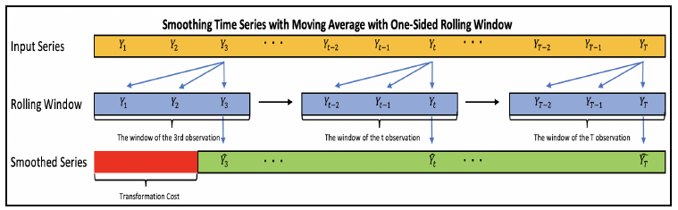

33 Decomposition of Time Series
Decomposition of time series data is one of the essential elements of time series analysis, namely, the decomposition process of time series data to its components: the trend, seasonal, and random components.
We will start this analysis by focusing on the moving average function and see its applications for smoothing time series data, removing seasonality, and estimating a series trend.
33.1 The Moving Average Function
The moving average (MA) is a simple function for smoothing time series data.
This function is based on averaging each observation of a series, when applicable, with its surrounding observations, that is, with a past, future, or a combination of both past and future observations, in chronological order.
The output of this transformation process is a smoothed version of the original series.
The MA function has a variety of applications, such as data smoothing, noise reduction, and trend estimation. Also, with some small modifications, this function can be used as a forecasting model.
The main components of the MA function are as follows:
The rolling window: This is a generic function that slides across the series in chronological order to extract sequential subsets
Average function: This is either a simple or weighted average, which is applied on each subset of the rolling window function.
33.1.1 The rolling window function
The structure of the rolling window function defines the sub-setting method of series observations, thus playing a pivotal role in the smoothing of time series data process.
The most common types of window structures are as follows:
The one-sided window: This is a sliding window with a width of n, which groups each observation of the series (when applicable) with its past consecutive n-1 observations.

Figure 11. Smoothing time series with moving average with one-sided rolling window
The output of the MA function (marked in green) is missing the first two observations (marked in red), which are considered to be the cost of the transformation process when using a one-sided rolling window.
The two-sided window: This is a rolling window with a width of n, which groups each observation of the series (when applicable) with its past n1 and future n2 observations. If n is an odd number and n1 is equal to n2, we can define the two-sided rolling window as centered.
 Figure 12. Smoothing time series with moving average with two-sided rolling window
Figure 12. Smoothing time series with moving average with two-sided rolling windowThe window function groups each observation with its preceding and leading observations. In this case, you cannot transform the first and last observations of the series (marked in red).
33.1.2 The average function
There are two types of averaging methods:
The arithmetic average: This is the most common and basic method for averaging a sequence of observations. It is based on summing all the observations and dividing them by the number of observations.
\[\overline{Y} = \frac{\sum_{i=1}^{n}Y_i}{n}\]
The weighted average: This method is based on applying weight to each observation of the series.
\[\overline{Y_t} = {\sum_{i=1}^{n}w_i Y_i}\]